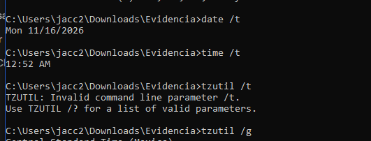
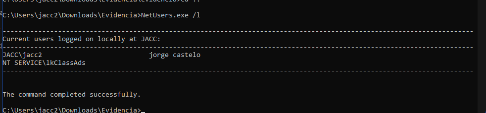
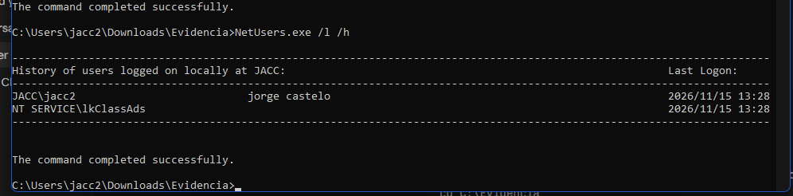
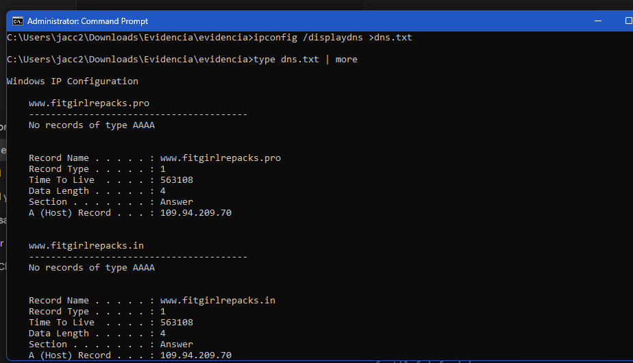
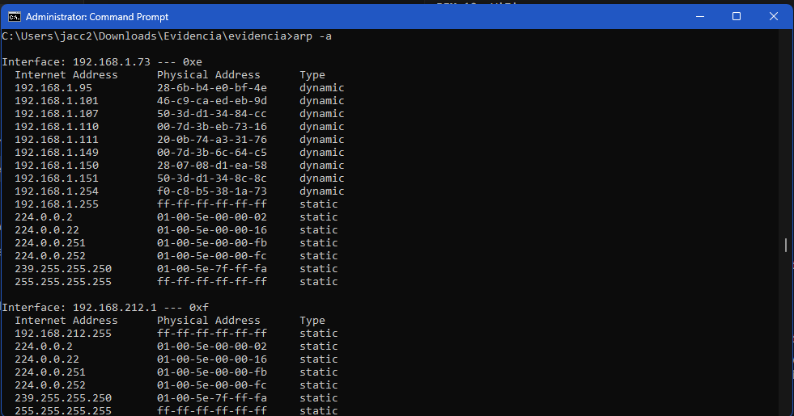
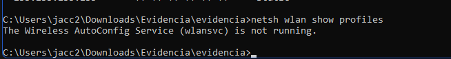
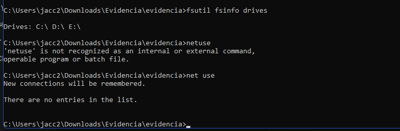
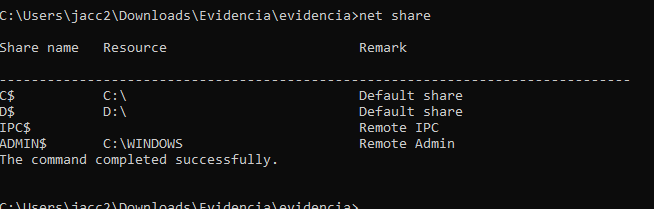
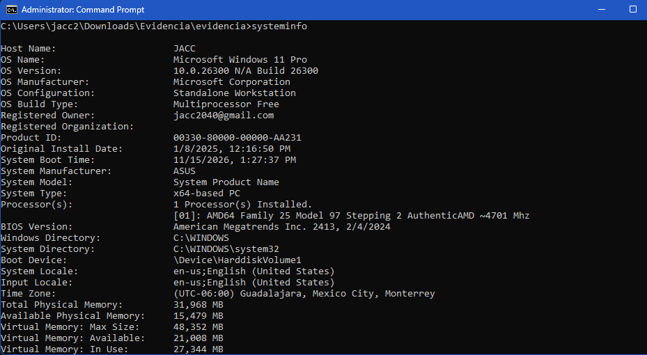

1. Ficha Técnica de la Investigación
Institución y Carrera
Universidad Politécnica de San Luis Potosí — Ingeniería en TI
Materia
CNO IV - Seguridad Informática
Primer Respondiente
Jorge Abraham Castelo Curioca (181512)
Sistema Objetivo
Equipo Windows 11 Pro en caliente (JACC)
Herramientas y Forma de Trabajo
Se empleó CMD como administrador para comandos clásicos de Windows, PowerShell como administrador para contrastar resultados y filtrar objetos, NetUsers.exe v1.23 para auditoría de sesiones activas e historial, y una carpeta dedicada (Evidencia) para volcar salidas extensas en archivos .txt y .evtx sin alterar el sistema.
2. Resumen Ejecutivo y Orden de Volatilidad
Como investigador forense digital y primer respondiente, se recolectó evidencia de un sistema Windows encendido siguiendo estrictamente el orden de volatilidad: primero los artefactos que se pierden al apagar el equipo (hora, procesos, conexiones de red y caché DNS) y posteriormente los datos persistentes (usuarios, configuración, tareas programadas y registros de eventos).
Hallazgos Principales
- Solo existe una cuenta humana con sesión activa (
JACC\jacc2), acompañada de una cuenta de servicio local (NT SERVICE\lkClassAds). - No hay unidades de red mapeadas ni carpetas compartidas creadas por el usuario; únicamente recursos administrativos predeterminados.
- Las conexiones salientes establecidas pertenecen a software legítimo (Chrome, Discord, Spotify, Roblox, Riot y Copilot).
- El historial persistente de PowerShell contiene el comando
irm https://massgrave.dev/get | iex, que descarga y ejecuta código remoto directamente en memoria. - La caché DNS registra más de 40 dominios relacionados con «repacks» de videojuegos resolviendo hacia la misma IP (
109.94.209.70).
3. Desarrollo de la Adquisición (Pasos 1 al 20)
Haz clic en cualquier captura de pantalla para ampliarla y revisar el detalle técnico.
Fecha y hora del sistema
Evidencia VolátilQué hacen: date /t y time /t muestran la fecha y hora actuales sin modificarlas; tzutil /g indica la zona horaria configurada; Get-Date entrega la marca temporal completa con segundos.
Resultado: En CMD se registró lunes 16/11/2026 a las 12:52 AM con zona horaria Central Standard Time (Mexico). En PowerShell, Get-Date marcó 1:12:24 AM del mismo día (unos 20 minutos después durante la sesión). En un primer intento se escribió tzutil /t provocando error de sintaxis, corregido con /g.
Por qué importa: Establece la referencia temporal base para correlacionar toda la evidencia adquirida y detectar desfases de reloj.

Procesos en ejecución
Evidencia VolátilQué hacen: tasklist enumera cada proceso activo junto con su identificador (PID) y consumo de memoria; tasklist /svc mapea los servicios hospedados dentro de cada proceso.
Resultado: Se volcaron ~350 procesos activos. Los más frecuentes fueron svchost.exe (90), chrome.exe (25) y msedgewebview2.exe (13), además de procesos críticos de Windows (System, smss.exe, csrss.exe, wininit.exe, winlogon.exe, services.exe, lsass.exe) y aplicaciones de usuario (Discord, Spotify, Steam, ASUS y NVIDIA). Con /svc se verificó que lsass.exe (PID 1524) ejecuta KeyIso, SamSs y VaultSvc.
Por qué importa: Permite identificar malware en memoria, procesos duplicados o ejecutables alojados en rutas anómalas antes de que el sistema se apague.
| Image Name | PID | Session Name | Session# | Mem Usage |
|---|---|---|---|---|
| System Idle Process | 0 | Services | 0 | 8 K |
| System | 4 | Services | 0 | 16,776 K |
| smss.exe | 788 | Services | 0 | 1,600 K |
| wininit.exe | 1352 | Services | 0 | 8,788 K |
| winlogon.exe | 1452 | Console | 1 | 16,224 K |
| lsass.exe | 1524 | Services | 0 | 35,364 K |
Servicios en CMD y en PowerShell
Evidencia VolátilQué hacen: Consultan al Service Control Manager (SCM) todos los servicios registrados y su estado actual.
Resultado y análisis: En CMD (sc query) se obtienen bloques detallados con tipo de servicio, estado (RUNNING/STOPPED) y códigos de salida (ej. AdobeUpdateService en ejecución; ADPSvc y ALG detenidos con código 1077). En PowerShell (Get-Service) se presenta una tabla estructurada filtrable por estado, observando servicios de Windows, Adobe, AMD y ASUS (ArmouryCrateService, AsusFanControlService), además de servicios por sesión de Windows 11 con sufijo _80353 (como AarSvc_80353). No se detectaron nombres maliciosos.
Por qué importa: Los atacantes suelen registrar servicios para lograr persistencia y ejecución con privilegios SYSTEM.

sc query state= all en CMD.
Get-Date y Get-Service en PS.
Running en PS.Usuarios con sesión abierta ahora
UsuariosQué hace: Lista las sesiones activas en tiempo real; el modificador /1 incluye cuentas locales.
Resultado: Muestra dos entradas: JACC\jacc2 (nombre completo «jorge castelo», sesión humana activa) y NT SERVICE\lkClassAds (cuenta de servicio de software instalado).
Por qué importa: Permite identificar quién opera el sistema en el instante de la intervención y descartar sesiones remotas o intrusos conectados simultáneamente.

NetUsers.exe /1.Usuarios que alguna vez iniciaron sesión
UsuariosQué hace: Con /h recupera el historial de cuentas que han iniciado sesión en el equipo y su última marca de tiempo.
Resultado: Aparecen exclusivamente JACC\jacc2 y NT SERVICE\lkClassAds, ambas con último inicio el 2026/11/15 a las 13:28, coincidiendo con el último arranque del sistema (1:27:37 PM en systeminfo).
Por qué importa: Detecta cuentas creadas por atacantes (backdoor accounts) o accesos fuera de horario habitual.

NetUsers.exe /1 /h.Información de red
RedQué hacen: Despliegan la configuración física y lógica de todas las interfaces de red y la tabla de enrutamiento del sistema.
Resultado: La interfaz principal Realtek Gaming 2.5GbE Family Controller (MAC 58-11-22-CF-16-C5) tiene asignada por DHCP la IP 192.168.1.73 con puerta de enlace 192.168.1.254 y servidores DNS 8.8.8.8 / 8.8.4.4. Se detectan además dos adaptadores de VirtualBox (192.168.56.1 y 192.168.212.1).
Por qué importa: Identifica al host en la red local y alerta sobre la existencia de hipervisores/máquinas virtuales que pueden contener evidencia adicional.
Host Name . . . . . . . . . . . . : Jacc Description . . . . . . . . . . . : Realtek Gaming 2.5GbE Family Controller Physical Address. . . . . . . . . : 58-11-22-CF-16-C5 DHCP Enabled. . . . . . . . . . . : Yes IPv4 Address. . . . . . . . . . . : 192.168.1.73 (Preferred) Subnet Mask . . . . . . . . . . . : 255.255.255.0 Default Gateway . . . . . . . . . : fe80::1%14 / 192.168.1.254 DHCP Server . . . . . . . . . . . : 192.168.1.254 NetBIOS over Tcpip. . . . . . . . : EnabledVer salida completa de red (evidencia/ipconfig) →
Nombres NetBIOS
RedQué hacen: -n lista los nombres NetBIOS locales registrados; -c muestra la caché de nombres NetBIOS remotos resueltos recientemente.
Resultado: Se registran JACC <00> UNIQUE (nombre de equipo), JACC <20> UNIQUE (servicio de compartición de archivos) y WORKGROUP <00> GROUP. La caché aparece vacía (No names in cache) en las tres interfaces.
Por qué importa: Confirma que es una estación independiente (sin dominio Active Directory) y que no hubo comunicación NetBIOS reciente con otros hosts.

nbtstat.Conexiones establecidas
Evidencia VolátilQué hace: Lista todas las conexiones TCP/UDP activas con direcciones locales/remotas, estado, PID y ejecutable propietario.
Resultado: Se contabilizaron 68 conexiones ESTABLISHED (en su mayoría tráfico loopback 127.0.0.1 / ::1). Las conexiones externas salen por HTTPS (puerto 443) y Spotify por el puerto 4070. También se observaron sockets en estado TIME_WAIT hacia dos equipos de la LAN: 192.168.1.95 y 192.168.1.149.
Por qué importa: Permite detectar canales de comando y control (C2) o exfiltración de datos en curso.
| Programa | Destino (IP:Puerto) |
|---|---|
| Roblox (RobloxPlayerBeta.exe) | 128.116.95.3:443 |
| Discord (Discord.exe) | 162.159.133.234:443 |
| Riot (RiotClientServices.exe) | 104.18.157.37:443, 172.64.151.57:443, 104.16.55.40:443 |
| Copilot (copilotapphost.exe) | 20.184.175.3:443 |
| Chrome (chrome.exe) | 149.154.167.99:443 |
| Spotify (Spotify.exe) | 104.154.127.247:4070 |
Aplicaciones y puertos en escucha
Evidencia VolátilQué hace: El parámetro -b vincula cada socket en escucha (LISTENING) o activo con el binario exacto que lo abrió.
Resultado: Escuchan en todas las interfaces (0.0.0.0) los procesos lkads.exe (puerto 2343, National Instruments) y AacAmbientLighting.exe (puerto 6850, ASUS). De forma local (127.0.0.1) escuchan ArmouryCrate.Service.exe (13010), ArmouryCrate.UserSessionHelper.exe (17945) y spoolsv.exe (47546). El proceso System (PID 4) escucha en el puerto 139 sobre el adaptador VirtualBox 192.168.212.1.
Por qué importa: Descubre backdoors o servicios expuestos en red que amplían la superficie de ataque.
TCP 192.168.1.73:54162 128.116.95.3:443 ESTABLISHED 32920 [RobloxPlayerBeta.exe] TCP 192.168.1.73:55722 162.159.133.234:443 ESTABLISHED 26564 [Discord.exe] TCP 192.168.1.73:62482 149.154.167.99:443 ESTABLISHED 27696 [chrome.exe] TCP 192.168.1.73:64436 104.154.127.247:4070 ESTABLISHED 31408 [Spotify.exe] TCP 0.0.0.0:2343 0.0.0.0:0 LISTENING 7420 [lkads.exe]Ver salida completa de netstat -anob (evidencia/anob.txt) →
Dominios consultados (Caché DNS)
Evidencia VolátilQué hace: Extrae la caché del cliente DNS de Windows con todos los nombres de dominio resueltos recientemente y sus registros asociados.
Resultado: El archivo contiene 1,039 líneas y ~50 dominios distintos. Más de 40 incluyen la cadena fitgirl (como fitgirl-repacks.cc, fitgirlrepacks.pro, fitgirlrepacks.in, fitgirltorrent.com) y 44 registros apuntan a la misma IP: 109.94.209.70 (incluida una consulta inversa 70.209.94.109.in-addr.arpa). También aparecen dominios de Steam, Vivox y Windows WNS.
Por qué importa: Conserva rastro de navegación reciente incluso si se borró el historial del navegador; múltiples dominios espejo apuntando a una sola IP son un vector habitual de distribución de troyanos.

dns.txt.Tabla ARP (Dirección física y lógica)
Evidencia VolátilQué hace: Muestra la tabla de resolución de direcciones IP a direcciones MAC de los dispositivos vecinos en el segmento de red.
Resultado: En la interfaz 192.168.1.73 figuran 9 entradas dinámicas: .95, .101, .107, .110, .111, .149, .150, .151 y la puerta de enlace 192.168.1.254 (MAC f0-c8-b5-38-1a-73), además de direcciones estáticas de broadcast/multicast.
Por qué importa: Permite identificar dispositivos locales con los que interactuó el equipo (especialmente .95 y .149 vistos en netstat) y detectar posibles ataques ARP spoofing.

arp -a.Redes WiFi guardadas
RedQué hace: Enumera los perfiles de redes inalámbricas almacenados en el sistema.
Resultado: Devuelve The Wireless AutoConfig Service (wlansvc) is not running. Esto concuerda con ipconfig /all, dado que el equipo opera únicamente mediante interfaz cableada Ethernet y adaptadores virtuales. No se inició el servicio para preservar intacto el estado del sistema.
Por qué importa: En equipos portátiles permite reconstruir ubicaciones físicas; en un equipo de escritorio sin WLAN confirma la topología cableada.

netsh wlan show profiles.Historial del intérprete de comandos
Evidencia Volátil / PersistenteQué hacen: doskey /history y Get-History recuperan los comandos de la sesión actual en memoria; (Get-PSReadlineOption).HistorySavePath lee el historial persistente de PowerShell (ConsoleHost_history.txt).
Resultado: En CMD se documenta como procedimiento al cierre de la sesión. En PowerShell, Get-History muestra los 4 comandos de la adquisición actual, mientras que el archivo de PSReadLine revela ejecuciones previas: un script en Python (con numpy y matplotlib) y el comando irm https://massgrave.dev/get | iex.
Por qué importa: Es uno de los artefactos forenses más reveladores para reconstruir acciones ejecutadas por el usuario o un atacante.
Get-History.
PSReadLine.Unidades mapeadas y volúmenes locales
Red / AlmacenamientoQué hacen: net use lista unidades de red conectadas; fsutil fsinfo drives enumera todas las letras de unidad montadas en el sistema.
Resultado: net use reporta There are no entries in the list (sin unidades de red). fsutil identifica tres volúmenes locales: C:\, D:\ y E:\ (tras corregir un primer intento escrito sin espacio como netuse).
Por qué importa: Descarta repositorios remotos montados para exfiltración y señala unidades secundarias (D:\ y E:\) que deben incluirse en la adquisición de disco.

net use y fsutil fsinfo drives.Recursos compartidos
RedQué hace: Muestra todos los recursos SMB compartidos por el equipo hacia la red.
Resultado: Únicamente aparecen los recursos administrativos predeterminados de Windows: C$, D$, IPC$ y ADMIN$. No hay carpetas compartidas creadas manualmente.
Por qué importa: Confirma que el equipo no está exponiendo directorios de usuario para movimiento lateral.

net share.Información general del equipo
ConfiguraciónQué hace: Recopila perfil detallado del sistema operativo, hardware, BIOS, memoria RAM, fecha de instalación y tiempo de actividad.
Resultado: Host JACC con Microsoft Windows 11 Pro (10.0.26300), rol Standalone Workstation, instalado originalmente el 8 de enero de 2025, último arranque el 15/11/2026 a la 1:27:37 PM, placa ASUS, procesador AMD (~4701 MHz), BIOS AMI v2413, ~32 GB RAM (31,968 MB) y zona horaria UTC-06:00.
Por qué importa: Define con exactitud el entorno técnico, el uptime del incidente y el nivel de parches del sistema.

systeminfo.Tareas programadas
ConfiguraciónQué hace: Exporta en formato detallado todas las tareas programadas del sistema, incluyendo ruta del binario, estado, última ejecución y contexto de usuario.
Resultado: Se registraron 422 entradas (366 habilitadas y 56 deshabilitadas). Corresponden a componentes de Microsoft y software instalado (ASUS, Adobe, AMD, Canon, Google, Edge, National Instruments, NVIDIA, OneDrive, Opera GX, Ubisoft Connect y Npcap). No se detectaron ejecuciones desde carpetas temporales.
Por qué importa: Las tareas programadas son uno de los mecanismos de persistencia más empleados por malware; \npcapwatchdog confirma la presencia del driver de captura de paquetes Npcap.
TaskName: \Adobe Uninstaller Status: Ready Last Run Time: 5/20/2026 8:47:08 PM Author: Adobe Systems Inc. TaskName: \npcapwatchdog Task To Run: C:\Program Files\Npcap\CheckStatus.bat Comment: Ensure Npcap service is configured to start at boot
Exportar los logs del sistema (.evtx)
Registros y Línea de Tiempowevtutil epl Security "%USERPROFILE%\Desktop\Security.evtx"
wevtutil epl Application "%USERPROFILE%\Desktop\Application.evtx"
dir "%USERPROFILE%\Desktop\*.evtx"
Qué hacen: wevtutil epl exporta de forma íntegra los canales principales del Visor de Eventos de Windows sin alterar los archivos activos.
Resultado: Se generaron System.evtx, Security.evtx y Application.evtx en el Escritorio de jacc2 el 16/11/2026 entre la 1:07 y 1:08 AM, cada uno con un tamaño de 21,041,152 bytes (63.1 MB en total, al haber alcanzado su cuota máxima circular).
Por qué importa: Preservan la auditoría histórica de inicios de sesión, creación de procesos, errores e instalación de servicios para su análisis offline.

.evtx exportados mediante dir.Inspección y respaldo del archivo hosts
Configuración • Procedimientocopy C:\Windows\System32\drivers\etc\hosts "%USERPROFILE%\Desktop\hosts.txt"
Qué hacen: Visualizan y crean una copia de trabajo del archivo de resolución estática de nombres local, el cual Windows consulta con prioridad sobre el DNS.
Procedimiento y qué buscar: En un archivo limpio todas las líneas activas son comentarios iniciados con #. El análisis busca entradas sin # que redirijan sitios legítimos (banca, antivirus, Windows Update) hacia IPs maliciosas o hacia 127.0.0.1 para bloquear actualizaciones.
Por qué importa: El secuestro del archivo hosts es una técnica clásica de phishing local y evasión de defensas.
Listado de archivos por fecha de creación
Línea de Tiempo • ProcedimientoQué hace: Recorre recursivamente todo el volumen C:\ (/s), incluyendo archivos ocultos y de sistema (/a), ordenándolos cronológicamente (/o:d) por fecha de creación (/t:c).
Procedimiento y qué buscar: Permite filtrar artefactos, ejecutables, scripts o archivos comprimidos creados en rutas críticas (Downloads, Temp, AppData) alrededor de la ventana temporal del incidente para construir la línea de tiempo forense.
Por qué importa: Cierra la fase de adquisición en caliente proporcionando el mapa cronológico completo del sistema de archivos.
4. Comparación Técnica: CMD vs. PowerShell y Categorización
| Aspecto | CMD (Símbolo del sistema) | PowerShell |
|---|---|---|
| Servicios | sc query state= all: bloques extensos con tipo, estado y códigos de salida Win32. |
Get-Service: tabla compacta con estado, nombre interno y nombre visible. |
| Filtrado | Requiere encadenar con findstr o parámetros específicos. |
Where-Object filtra y ordena dinámicamente por cualquier propiedad. |
| Tipo de salida | Texto plano no estructurado. | Objetos .NET exportables directamente a CSV, JSON o HTML. |
| Fecha y hora | date /t y time /t por separado (sin segundos). |
Get-Date unificado con precisión de segundos. |
| Historial | doskey /history: limitado únicamente a la ventana actual. |
Get-History (sesión) + archivo persistente PSReadLine entre reinicios. |
5. Indicios y Puntos de Atención
Aunque no hay compromiso confirmado ni herramientas de acceso remoto no autorizadas (AnyDesk/TeamViewer), se marcan 6 hallazgos para investigación profunda:
- Ejecución remota sin inspección:
irm https://massgrave.dev/get | iexen el historial de PowerShell (script público de activación que ejecuta código descargado directamente). - Sitios de repacks en DNS: Más de 40 dominios apuntando a
109.94.209.70, asociados a descargas no oficiales con riesgo de troyanos. - Puertos expuestos en
0.0.0.0: Puertos2343(lkads.exe) y6850(AacAmbientLighting.exe) escuchando en todas las interfaces. - Vecinos locales: Identificar por MAC los dispositivos
192.168.1.95y192.168.1.149. - Npcap y VirtualBox: Verificar legitimidad de instalación e inspeccionar las VMs alojadas.
- Artefactos pendientes: Revisar el contenido completo de
hostsylistado_creacion.txt.
6. Siguientes Pasos en la Investigación
- Cadena de custodia: Documentar cada paso y evitar cualquier alteración adicional al equipo.
- Integridad criptográfica: Calcular hashes
SHA-256de todos los.evtxy.txtexportados. - Adquisición de RAM y disco: Volcar la memoria volátil antes de apagar y generar imágenes forenses bit a bit de
C:,D:yE:. - Auditoría de Event IDs: Analizar eventos
4624/4625(logons),4688(procesos),7045(servicios) y4698(tareas). - Artefactos de navegador y scripts: Revisar historial/descargas del navegador y auditar el payload descargado desde
massgrave.dev. - Línea de tiempo maestra: Correlacionar
listado_creacion.txtcon los logs de eventos y emitir el dictamen final.
7. Evidencia Documental Original
Consulta el informe ejecutivo original de la Actividad 19 con el desarrollo completo de los 20 puntos de adquisición.
Descargar Documento (PDF)